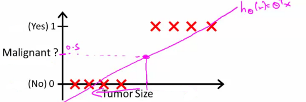

06: Logistic Regression
Classification
- Where y is a discrete value
- Develop the logistic regression algorithm to determine what class a new input should fall into
- Classification problems
- Email -> spam/not spam?
- Online transactions -> fraudulent?
- Tumor -> Malignant/benign
- Variable in these problems is Y
- Y is either 0 or 1
- 0 = negative class (absence of something)
- 1 = positive class (presence of something)
- Y is either 0 or 1
- Start with binary class problems
- Later look at multiclass classification problem, although this is just an extension of binary classification
- How do we develop a classification algorithm?
- Tumour size vs malignancy (0 or 1)
- We could use linear regression
- Then threshold the classifier output (i.e. anything over some value is yes, else no)
- In our example below linear regression with thresholding seems to work

- We can see above this does a reasonable job of stratifying the data points into one of two classes
- But what if we had a single Yes with a very small tumour
- This would lead to classifying all the existing yeses as nos
- Another issues with linear regression
- We know Y is 0 or 1
- Hypothesis can give values larger than 1 or less than 0
- So, logistic regression generates a value which is always between 0 and 1
- Logistic regression is a classification algorithm - don't be confused
Hypothesis representation
- What function is used to represent our hypothesis in classification
- We want our classifier to output values between 0 and 1
- When using linear regression we did hθ(x) = (θT x)
- For classification hypothesis representation we do hθ(x) = g((θT x))
- Where we define g(z)
- z is a real number
- g(z) = 1/(1 + e-z)
- This is the sigmoid function, or the logistic function
- If we combine these equations we can write out the hypothesis as
import numpy as np def g(z): # the sigmoid function return 1 / (1 + np.exp(-z)) g(0) # 0.5 - the crossing point g(10) # 0.99995 - asymptotes towards 1 g(-10) # 0.00005 - asymptotes towards 0
Crosses 0.5 at z = 0 and saturates in both directions — the shape drawn above.
- Where we define g(z)
- What does the sigmoid function look like
- Crosses 0.5 at the origin, then flattens out
- Asymptotes at 0 and 1

- Given this we need to fit θ to our data
Interpreting hypothesis output
- When our hypothesis (hθ(x)) outputs a number, we treat that value as the estimated probability that y=1 on input x
- Example
- If X is a feature vector with x0 = 1 (as always) and x1 = tumourSize
- hθ(x) = 0.7
- Tells a patient they have a 70% chance of a tumor being malignant
- We can write this using the following notation
- hθ(x) = P(y=1|x ; θ)
- What does this mean?
- Probability that y=1, given x, parameterized by θ
- Example
- Since this is a binary classification task we know y = 0 or 1
- So the following must be true
- P(y=1|x ; θ) + P(y=0|x ; θ) = 1
- P(y=0|x ; θ) = 1 - P(y=1|x ; θ)
- So the following must be true
Decision boundary
- Gives a better sense of what the hypothesis function is computing
- Better understand of what the hypothesis function looks like
- One way of using the sigmoid function is;
- When the probability of y being 1 is greater than 0.5 then we can predict y = 1
- Else we predict y = 0
- When is it exactly that hθ(x) is greater than 0.5?
- Look at sigmoid function
- g(z) is greater than or equal to 0.5 when z is greater than or equal to 0

- g(z) is greater than or equal to 0.5 when z is greater than or equal to 0
- So if z is positive, g(z) is greater than 0.5
- z = (θT x)
- So when
- θT x >= 0
- Then hθ >= 0.5
- Look at sigmoid function
- One way of using the sigmoid function is;
- So what we've shown is that the hypothesis predicts y = 1 when θT x >= 0
- The corollary of that when θT x <= 0 then the hypothesis predicts y = 0
- Let's use this to better understand how the hypothesis makes its predictions
Decision boundary
- hθ(x) = g(θ0 + θ1x1 + θ2x2)

- So, for example
- θ0 = -3
- θ1 = 1
- θ2 = 1
- So our parameter vector is a column vector with the above values
- So, θT is a row vector = [-3,1,1]
- What does this mean?
- The z here becomes θT x
- We predict "y = 1" if
- -3x0 + 1x1 + 1x2 >= 0
- -3 + x1 + x2 >= 0
- We can also re-write this as
- If (x1 + x2 >= 3) then we predict y = 1
- If we plot
- x1 + x2 = 3 we graphically plot our decision boundary

- Means we have these two regions on the graph
- Blue = false
- Magenta = true
- Line = decision boundary
- Concretely, the straight line is the set of points where hθ(x) = 0.5 exactly
- The decision boundary is a property of the hypothesis
- Means we can create the boundary with the hypothesis and parameters without any data
- Later, we use the data to determine the parameter values
- i.e. y = 1 if
- 5 - x1 > 0
- 5 > x1
- Means we can create the boundary with the hypothesis and parameters without any data
Non-linear decision boundaries
- Get logistic regression to fit a complex non-linear data set
- Like polynomial regression add higher order terms
- So say we have
- hθ(x) = g(θ0 + θ1x1 + θ2x2 + θ3x12 + θ4x22)
- We take the transpose of the θ vector times the input vector
- Say θT was [-1,0,0,1,1] then we say;
- Predict that "y = 1" if
- -1 + x12 + x22 >= 0
or - x12 + x22 >= 1
- -1 + x12 + x22 >= 0
- If we plot x12 + x22 = 1
- This gives us a circle with a radius of 1 around 0

- Mean we can build more complex decision boundaries by fitting complex parameters to this (relatively) simple hypothesis
- More complex decision boundaries?
- By using higher order polynomial terms, we can get even more complex decision boundaries

Cost function for logistic regression
- Fit θ parameters
- Define the optimization objective for the cost function we use to fit the parameters
- Training set of m training examples
- Each example is an n+1 length column vector
- Training set of m training examples
m examples, each a column vector of n+1 features.
- This is the situation
- Set of m training examples
- Each example is a feature vector which is n+1 dimensional
- x0 = 1
- y ∈ {0,1}
- Hypothesis is based on parameters (θ)
- Given the training set how do we choose/fit θ?
- Linear regression uses the following function to determine θ
- Instead of writing the squared error term, we can write
- If we define "cost()" as;
- cost(hθ(xi), y) = 1/2(hθ(xi) - yi)2
- Which evaluates to the cost for an individual example using the same measure as used in linear regression
- We can redefine J(θ) as
- Which, appropriately, is the sum of all the individual costs over the training data (i.e. the same as linear regression)
- If we define "cost()" as;
- To further simplify it we can get rid of the superscripts
- So
- So
- What does this actually mean?
- This is the cost you want the learning algorithm to pay if the outcome is hθ(x) and the actual outcome is y
- If we use this function for logistic regression this is a non-convex function for parameter optimization
- Could work....
- What do we mean by non convex?
- We have some function - J(θ) - for determining the parameters
- Our hypothesis function has a non-linearity (sigmoid function of hθ(x) )
- This is a complicated non-linear function
- If you take hθ(x) and plug it into the Cost() function, and then plug the Cost() function into J(θ) and plot J(θ) we find many local optimum -> non convex function
- Why is this a problem
- Lots of local minima mean gradient descent may not find the global optimum - may get stuck in a local minimum
- We would like a convex function so if you run gradient descent you converge to a global minimum
A convex logistic regression cost function
- To get around this we need a different, convex Cost() function which means we can apply gradient descent
- This is our logistic regression cost function
- This is the penalty the algorithm pays
- Plot the function
- Plot y = 1
- So hθ(x) evaluates as -log(hθ(x))

- So when we're right, cost function is 0
- Else it slowly increases cost function as we become "more" wrong
- X axis is what we predict
- Y axis is the cost associated with that prediction
- This cost functions has some interesting properties
- If y = 1 and hθ(x) = 1
- If hypothesis predicts exactly 1 and that's exactly correct then that corresponds to 0 (exactly, not nearly 0)
- As hθ(x) goes to 0
- Cost goes to infinity
- This captures the intuition that if hθ(x) = 0 (predict P (y=1|x; θ) = 0) but y = 1 this will penalize the learning algorithm with a massive cost
- If y = 1 and hθ(x) = 1
- What about if y = 0
- then cost is evaluated as -log(1- hθ( x ))
- Just get inverse of the other function

- Now it goes to plus infinity as hθ(x) goes to 1
- With our particular cost functions J(θ) is going to be convex and avoid local minimum
Simplified cost function and gradient descent
- Define a simpler way to write the cost function and apply gradient descent to the logistic regression
- By the end should be able to implement a fully functional logistic regression function
- Logistic regression cost function is as follows
- This is the cost for a single example
- For binary classification problems y is always 0 or 1
- Because of this, we can have a simpler way to write the cost function
- Rather than writing cost function on two lines/two cases
- Can compress them into one equation - more efficient
- Because of this, we can have a simpler way to write the cost function
- Can write cost function is
- cost(hθ(x),y) = -ylog( hθ(x) ) - (1-y)log( 1- hθ(x) )
- This equation is a more compact version of the two cases above
- cost(hθ(x),y) = -ylog( hθ(x) ) - (1-y)log( 1- hθ(x) )
- We know that there are only two possible cases
- y = 1
- Then our equation simplifies to
- -log(hθ(x)) - (0)log(1 - hθ(x))
- -log(hθ(x))
- Which is what we had before when y = 1
- -log(hθ(x)) - (0)log(1 - hθ(x))
- Then our equation simplifies to
- y = 0
- Then our equation simplifies to
- -(0)log(hθ(x)) - (1)log(1 - hθ(x))
- = -log(1- hθ(x))
- Which is what we had before when y = 0
- Then our equation simplifies to
- Clever!
- y = 1
- For binary classification problems y is always 0 or 1
- So, in summary, our cost function for the θ parameters can be defined as
Because y is always 0 or 1, one of the two terms is always zero — so this single expression covers both cases.
def J(theta, X, y):
h = g(X @ theta)
return -(y * np.log(h) + (1 - y) * np.log(1 - h)).mean()
X = np.array([[1, 1], [1, 2], [1, 3], [1, 4]], dtype=float)
y = np.array([0, 0, 1, 1], dtype=float)
J(np.zeros(2), X, y) # 0.6931 = log(2): with theta = 0 every h is 0.5
The compressed cost, vectorized. With θ = 0 the hypothesis says 0.5 for everything, and the cost is exactly log 2 per example.
- Why do we choose this function when other cost functions exist?
- This cost function can be derived from statistics using the principle of maximum likelihood estimation (chapter 05)
- Note this does mean there's an underlying probabilistic assumption - the labels, given x, are modelled as Bernoulli
- Also has the nice property that it's convex
- This cost function can be derived from statistics using the principle of maximum likelihood estimation (chapter 05)
- To fit parameters θ:
- Find parameters θ which minimize J(θ)
- This means we have a set of parameters to use in our model for future predictions
- Then, if we're given some new example with set of features x, we can take the θ which we generated, and output our prediction using
- This result is
- p(y=1 | x ; θ)
- Probability y = 1, given x, parameterized by θ
- p(y=1 | x ; θ)
- This result is
How to minimize the logistic regression cost function
- Now we need to figure out how to minimize J(θ)
- Use gradient descent as before
- Repeatedly update each parameter using a learning rate
simultaneously update all θj
theta = np.zeros(2)
for _ in range(20000):
h = g(X @ theta)
theta = theta - 0.5 * X.T @ (h - y) / len(y)
theta # [-25.6, 10.3]
-theta[0] / theta[1] # 2.48 -> the decision boundary sits between x = 2 and x = 3
np.round(g(X @ theta), 3) # [0., 0.007, 0.995, 1.] - the fit
The same update as linear regression, but h is the sigmoid. The boundary lands at x ≈ 2.5 — between the last y = 0 example and the first y = 1.
- If you had n features, you would have an n+1 column vector for θ
- This equation is the same as the linear regression rule
- The only difference is that our definition for the hypothesis has changed
- Previously, we spoke about how to monitor gradient descent to check it's working
- Can do the same thing here for logistic regression
- When implementing logistic regression with gradient descent, we have to update all the θ values (θ0 to θn) simultaneously
- Could use a for loop
- Better would be a vectorized implementation
- Feature scaling for gradient descent for logistic regression also applies here
Advanced optimization
- Previously we looked at gradient descent for minimizing the cost function
- Here look at advanced concepts for minimizing the cost function for logistic regression
- Good for large machine learning problems (e.g. huge feature set)
- What is gradient descent actually doing?
- We have some cost function J(θ), and we want to minimize it
- We need to write code which can take θ as input and compute the following
- J(θ)
- Partial derivative of J(θ) with respect to j (where j=0 to j = n)
for j = 0, 1, …, n
- Given code that can do these two things
- Gradient descent repeatedly does the following update
- So update each j in θ sequentially
- So, we must;
- Supply code to compute J(θ) and the derivatives
- Then plug these values into gradient descent
- Alternatively, instead of gradient descent to minimize the cost function we could use
- Conjugate gradient
- BFGS (Broyden-Fletcher-Goldfarb-Shanno)
- L-BFGS (Limited memory - BFGS)
- These are more optimized algorithms which take that same input and minimize the cost function
- These are very complicated algorithms
- Some properties
- Advantages
- No need to manually pick alpha (learning rate)
- Have a clever inner loop (line search algorithm) which tries a bunch of alpha values and picks a good one
- Often faster than gradient descent
- Do more than just pick a good learning rate
- Can be used successfully without understanding their complexity
- No need to manually pick alpha (learning rate)
- Disadvantages
- Could make debugging more difficult
- Should not be implemented yourself
- Different libraries may use different implementations - may hit performance
- Advantages
Using advanced cost minimization algorithms
- How to use algorithms
- Say we have the following example
from scipy.optimize import minimize
def cost_function(theta):
jval = ((theta - 5) ** 2).sum()
gradient = 2 * (theta - 5)
return jval, gradient
res = minimize(cost_function, np.zeros(2), jac=True)
res.x # [5., 5.] - the minimum, exactly where the derivatives hit zero
The worked example above, run for real: minimize drives both parameters to 5 without us ever picking a learning rate.
- Example above
- θ1 and θ2 (two parameters)
- Cost function here is J(θ) = (θ1 - 5)2 + ( θ2 - 5)2
- The derivatives of the J(θ) with respect to either θ1 and θ2 turns out to be the 2(θi - 5)
- First we need to define our cost function, which should have the following signature
def cost_function(theta):
...
return jval, gradient
- Input for the cost function is
theta, which is a vector of the θ parameters - Two return values from
cost_functionarejval- How we compute the cost function θ (the underived cost function)
- In this case = (θ1 - 5)2 + (θ2 - 5)2
- How we compute the cost function θ (the underived cost function)
- gradient
- 2 by 1 vector
- 2 elements are the two partial derivative terms
- i.e. this is an n-dimensional vector
- Each indexed value gives the partial derivatives for the partial derivative of J(θ) with respect to θi
- Where i is the index position in the gradient vector
- With the cost function implemented, we can call the advanced algorithm using
from scipy.optimize import minimize initial_theta = np.zeros(2) # initialize the theta values res = minimize(cost_function, initial_theta, # run the algorithm jac=True, options={'maxiter': 100}) opt_theta, function_val = res.x, res.fun
- Here
optionsis a dictionary giving options for the algorithmminimize- SciPy's general-purpose cost function minimizer (scipy.optimize.minimize)
cost_functionis passed as an object - Python functions are first-class values, so no special syntax is needed
- For this implementation
jac=Truetells minimize that cost_function returns the gradient along with the cost
- How do we apply this to logistic regression?
- Here we have a vector
def cost_function(theta):
jval = [code to compute ];
gradient[0] = [code to compute ];
gradient[1] = [code to compute ];
gradient[n] = [code to compute ];
- Here
- theta is a n+1 dimensional column vector
- NumPy indexes from 0, so gradient[0] is the θ0 entry
- Write a cost function which captures the cost function for logistic regression
Multiclass classification problems
- Getting logistic regression for multiclass classification using one vs. all
- Multiclass - more than yes or no (1 or 0)
- Classification with multiple classes for assignment

- Given a dataset with three classes, how do we get a learning algorithm to work?
- Use one vs. all classification make binary classification work for multiclass classification
- One vs. all classification
- Split the training set into three separate binary classification problems
- i.e. create a new fake training set
- Triangle (1) vs crosses and squares (0) hθ1(x)
- P(y=1 | x1; θ)
- Crosses (1) vs triangle and square (0) hθ2(x)
- P(y=1 | x2; θ)
- Square (1) vs crosses and triangle (0) hθ3(x)
- P(y=1 | x3; θ)
- Triangle (1) vs crosses and squares (0) hθ1(x)
- i.e. create a new fake training set
- Split the training set into three separate binary classification problems

- Overall
- Train a logistic regression classifier hθ(i)(x) for each class i to predict the probability that y = i
- On a new input, x to make a prediction, pick the class i that maximizes the probability that hθ(i)(x) = 1